Tor Nedir ?
Tor projesi, ABD'nin Deniz Kuvvetleri tarafından, ABD hükümetinin haberleşmesini korumak amacıyla geliştirilmiş olan bir istihbarat çözümüdür. Ancak şimdilerde çevrimiçi gizliliği teşvik eden ve kar amacı gütmeyen açık kaynaklı bir organizasyon halini alarak, geniş kitlelerin kullanımına açık şekilde hizmet sunmaya devam etmektedir. Buradaki açık kaynak ifadesinin ne anlama geldiğini bilmiyorsanız; projenin açık kaynaklı olması demek, projeyi oluşturan tüm kaynak kodlarının herkese açık şekilde paylaşılıyor olması demektir. Projenin tüm kaynak kodları açık şekilde paylaşıldığından proje pek çok gönüllü tarafından çok daha hızlı bir biçimde, içerisinde zararlı kodların bulunmaması garanti edilerek geliştirilebiliyor. Genel olarak projenin açık kaynaklı olması, güvenilirliğinin ve gelişiminin herkese açık olduğunun belirtisidir. Özetle; herhangi bir proje açık kaynaklı ise o proje herkesin denetimi altındadır.
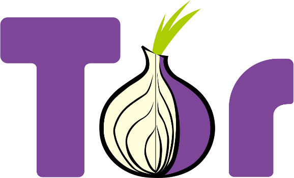Tor projesinin ana fon kaynağı, gönüllülerden toplanan bağışlar ile birlikte, içerisinde Amerikan hükümetinin de bulunduğu pek çok sponsordan alınan yüklü miktardaki desteklerden gelmektedir. İşin ilginç tarafı ABD hükümetinin kimi teşkilatları bir taraftan projenin gelişimi için yüklü miktarda destek sağlarken, kimi teşkilatları ise Tor ağının güvenliğini delmek için rutin olarak çok fazla kaynak harcıyor. Yani hem güvenliğin geliştirilmesi hem de sömürülmesi için ABD tarafından aynı anda Tor projesine oldukça fazla fon sağlanıyor. Bu durum ilginç çünkü Tor sadece ABD hükümetinin kullanıma açık değil, tüm dünyadaki insanlar için ücretsiz ve kolay ulaşılabilir. Hükumet desteğinin farklı siyasi ve stratejik nedenleri olabileceği düşünülüyor ve Tor bağımsız kuruluşu da bu eleştirileri dikkate alarak fon tabanını geliştirmeye yönelik çalışmalar yürütüyor. Yine de destekleyen ana kurumun "ABD Dışişleri Bakanlığı Demokrasi, İnsan Hakları ve Çalışma Bürosu" olduğu düşünüldüğünde yapılan yardımın art niyetli olmadığı, insan haklarına yönelik olduğu da iddia ediliyor. Eğer merak ediyorsanız daha fazla sponsorluk bilgisi için Tor projesinin web sitesine göz atabilirsiniz.
Tor ismi, gizliliği sağlamak için yapılan çok katmanlı şifreleme ve yönlendirmeleri İngilizce olarak tarif eden “The Onion Router” ifadesinden geliyor. Yönlendirmeler çok katmanlı olduğu için bu yapı soğana benzetilerek soğanın İngilizce karşılığı olan "onion" olarak isimlendirilmiş.
Tor'un temel amacı bizim internet üzerindeki ayak izlerimizi çarpıtarak anonim olarak sansürsüzce internete erişmemize olanak sağlamaktır.
Tor Nasıl Çalışır ?
Tor temel olarak hedef şaşırtma ilkesine dayanıyor. Çalışma yapısını daha iyi anlamak ve aslında nasıl bir sisteme bel bağladığımızı görmek adına, anlatımlara öncelikle genel çalışma yapısından bahsederek başlayalım.
Kullanıcıyı anonimleştirme işlemi için yaklaşık 7000 gönüllü(Zamanla bu sayı değişiklik gösterebilir.) sunucudan rastgele 3 tanesi seçilerek kullanılır. 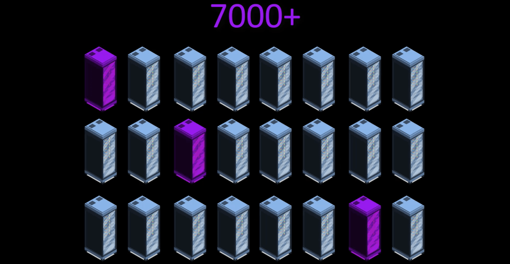 Bu seçilmiş olan sunuculara düğüm denir ve paketler şifrelenip bu 3 düğüm üzerinden geçerek hedefe ulaşır. Hedef sunucuya ulaşan paketlerin cevabı da aynı şekilde şifrelenerek bu 3 düğüm üzerinden geri döner. 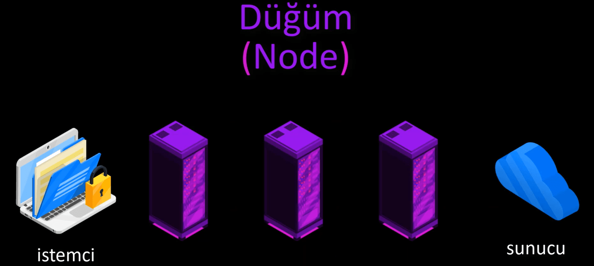 Böylelikle istemci olarak bizim talep ettiklerimiz, hedef sunucu üzerinden güvenli şekilde aktarılmış olur. Oldukça genel tanımla Tor ağının çalışma şekli budur. Ancak gizliliğimizin nasıl bir sistem üzerinden sağlandığını biraz daha ayrıntılı bilmek bizi daha güvenli kılacağı için açıklamaya devam edelim.
Örnek senaryomuzda Tor üzerinden wikipedia.org adresine gitmek isteyelim ve bu isteğimizin geçirdiği süreçleri tek tek ele alarak açıklayalım.
Tor kullanımı için Tor Browser yani Tor uyumlu tarayıcımızı açtık ve gitmek istediğimiz adresi yazdık.
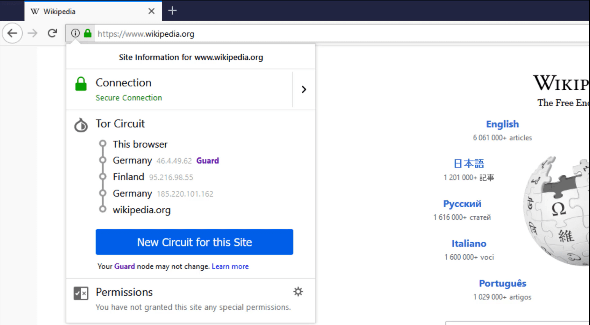Tor öncelikle kendi bünyesinde bulunan 7000 civarı aktif sunucu, diğer bir deyişle düğüm noktasından rastgele 3 düğüm noktası belirler. Tor sunucuları gönüllülük esası ile çalışır ve gönüllü sunucu seçiminde bir takım seçim kıstaslarının dışında yüksek bant genişliği sağlayabilecek ve uzun süre açık kalabilecek nitelikte sunucular tercih edilir. Yani şu an için 7000 civarı olan bu sunucuların sayısı zamanla değişiklik gösterebilir. Ve tüm sunucuların listesi herkese açık şekilde yayınlanır. Zaten Tor da, rastgele seçimi açıklanmış olan bu sunucu listesi üzerinden yapar.
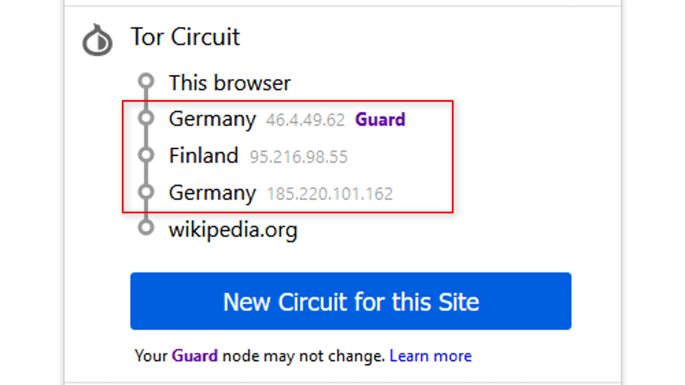Düğüm noktaları rastgele olarak belirlendikten sonra bizim istek paketimiz 3 katmanlı olarak şifrelenir. Buradaki istek paketi bizim "wikipedia.org" adresine gitmek istediğimizi belirten pakettir.
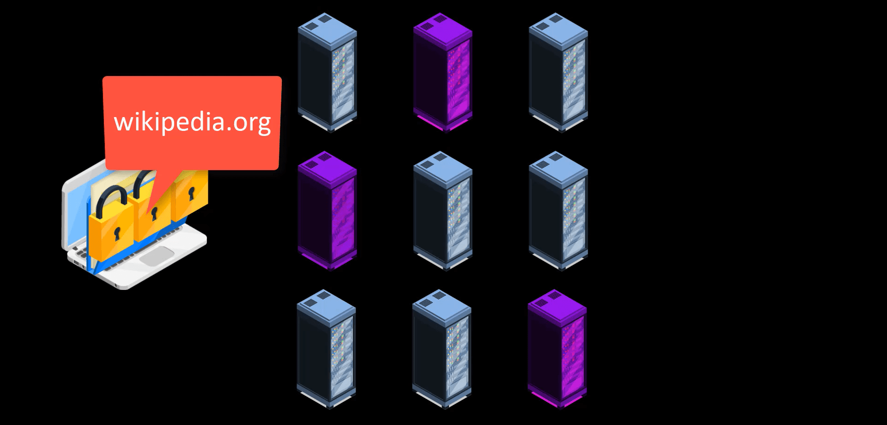Şifreli katmanlardan ilki başlangıç düğümünde bulunan anahtar sayesinde çözülür ve çözülen şifre yalnızca bir sonraki düğüm noktasının bilgisini verir. Böylelikle başlangıç düğümü elindeki istek paketini hangi düğüme yönlendireceğini bilir.
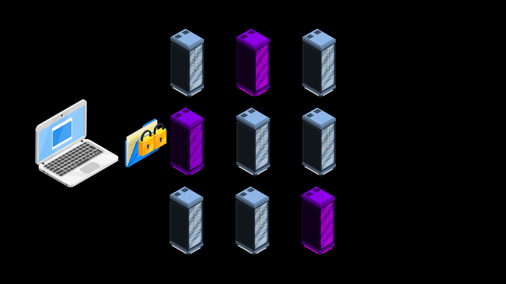Aynı şekilde ortanca düğüm noktası da 2. katmanda yer alan şifreyi kendi anahtarı ile çözerek, paketi iletmesi gereken bir sonraki düğüm noktasının hangisi olduğunu öğrenir.
Böylelikle çıkış düğümüne ulaşan paketteki son şifre katmanı da çözülerek, bu paketin hangi sunucuya iletilmesi gerektiğinin bilgisi son düğüm noktası tarafından öğrenilip paket ilgili sunucuya iletilir.
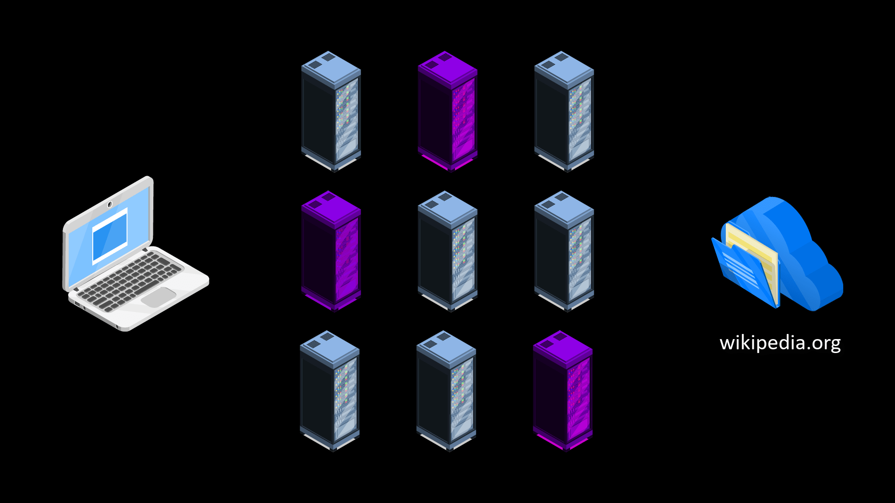Sunucuya ulaşan pakete cevap olarak, sunucunun yanıt paketi ise yine aynı yolu izleyerek 3 aşamalı şifrelerin çözülmesi ile kullanıcıya yani istemciye ulaşır.
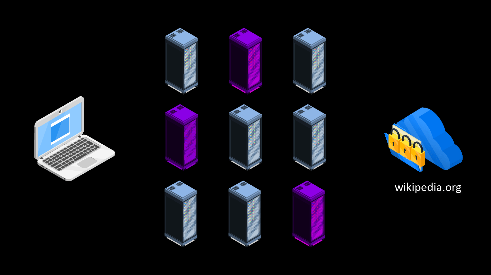Ayrıca uzun süreli kullanımda kullanıcıların anonimliğini sağlamak adına seçilmiş olan düğümler de her 10 dakikada bir varsayılan olarak yeniden rastgele şekilde değiştirilir. Bunun yanında kullanıcıların da istediği zaman manuel olarak düğüm noktalarını rastgele olacak şekilde değiştirme imkanı vardır.
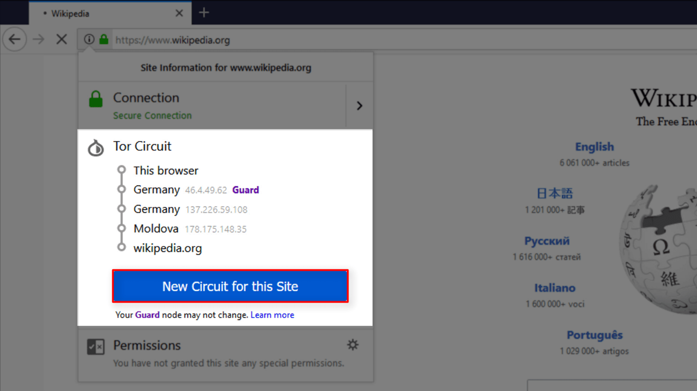
Çok daha derin ve teknik konulara girmek bizi Tor ağında daha güvenli kılmayacağı için bu kadarlık bilgi şimdilik yeterli. Tor ağı genel olarak bu şekilde çalışıyor. İlerleyen kısımlarda bu çalışma yapısından yeri geldikçe daha detaylıca bahsediyor olacağız. Eğer Tor ağının ardındaki teknik ve bilimsel konuları merak ediyorsanız bu konuda pek çok makale mevcut, Tor projesinin web sitesinden ya da kısa bir internet araştırması yapmanız halinde bu detaylı bilgilere rahatlıkla ulaşabilirsiniz. Ancak güvenlik konusunda bizim üstümüze düşen ne varsa bu eğitimde bahsediyor olacağımdan emin olabilirsiniz. Geri kalan kısım işin daha çok teknik ya da bilimsel tarafı olarak tasvir edilebilir.
Tor ağını güvenli kılan nedir ?
Bu sistemde kullanıcının gerçek kimliğini yalnızca ilk düğüm noktası bilir. Çıkış düğümü ise sadece elindeki paketi hangi sunucuya iletmesi gerektiğini bilir. Böylelikle ilk sunucu elindeki paketin hangi sunucuya gittiğini bilmezken, son düğüm noktası ise elindeki paketin kimden geldiğini bilemez. Arada kalan orta düğüm noktasının görevi ise sadece ilk düğüm noktası ile son düğüm noktası arasında aktarma olduğu için paketi gönderini ve paketin hangi sunucuya ulaşacağını yani hedefini bilemez. Bu sayede anonim şekilde istemci ile sunucu arasında iletişim sağlanır.
Aşağıdaki tabloya bakarak durumu daha net görebilirsiniz.
| Düğüm Noktası | Biliyor | Bilmiyor |
|---|---|---|
| Giriş Düğümü | Kullanıcının gerçek ip adresini | Paketin hangi sunucuya iletileceğini |
| Orta Düğüm | Kendinden önceki ve sonraki düğümün adresini | Paketin kimden geldiğini(kullanıcının gerçek ip adresini) ve hangi sunucuya gittiğini |
| Çıkış Düğümü | Paketin hangi sunucuya iletileceğini | Paketin kimden geldiğini(kullanıcının gerçek ip adresini) |
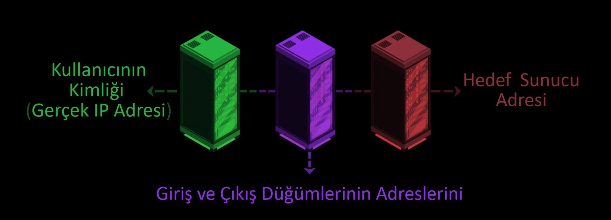
Ancak gerçek dünyada her şey bu kadar güllük gülistanlık değil elbette. Şimdi Tor ağının zaaflarından ve bu zaaflara getirilebilecek çözümlerden bahsedelim.
Temel Zaaf - 1
Öncelikle Tor üzerinden bağlanabileceğimiz sunucuların listesi herkese açık olarak yayınlandığı için herhangi bir otorite(devlet, internet servis sağlayıcınız, ağ yöneticiniz vs..) istediği zaman bu sunucuların her birini engelleyerek Tor ağına erişiminizi kolaylıkla kısıtlayabilir.
Bu duruma çözüm olarak Tor, köprü bağlantıları sağlar. Tor ağına erişmeden önce size sağlanan köprü bağlantısı ile, mevcut bulunan engelleri aşarak Tor ağına sınırsız erişim sağlayabilirsiniz. Üstelik tüm bu köprü adresleri gizli tutulduğu için olası durumlarda hepsinin birden engellenmesinin de önüne geçilmiş olur.
Bu noktada aklınıza; "madem köprü bağlantılarını gizli tutabilecek yapısı var neden sunucuların listesini de gizli tutmuyor ?" gibi bir soru gelmiş olabilir. Esasen sunucu bilgilerini gizli tutmaya çalışmanın bir anlamı yoktur. Çünkü gönüllü sunuculardan birine sahip olan herkes listeyi bir istemci çalıştırarak alıp yayınlayabilir. Tüm sunucular, ortak Tor devresi üzerinde yer aldığı için herhangi bir sunucunun diğer sunucuların listesine ulaşması hiç de zor değildir. Yani Tor ağının çalışma yapısı gereği ağ üzerindeki hangi sunucuların aktif hangi sunucuların aktif olmadığının bilgisini almak çok kolaydır. Bu yüzden sunucu listesini gizli tutmak anlamsızdır.
Temel Zaaf - 2
Paketimizi ilk düğüm noktasına ulaştırırken ve paketimizin son düğüm noktasından hedef sunucuya ulaşması sırasında gizliliğimiz, giriş ve çıkış düğümlerini dinleyenler veya kontrol edenler tarafından ihlal edilebilir.
Eğer gözlemciler sadece sizinle ilk düğüm noktası arasında gözlem yapıyorlarsa yani ağı dinliyorlarsa yalnızca Tor ağına bağlandığınızı görebilirler. Kimi durumlarda bu bile sizin şüpheli konumuna düşerek daha derin takip altına alınmanıza neden olabilir.
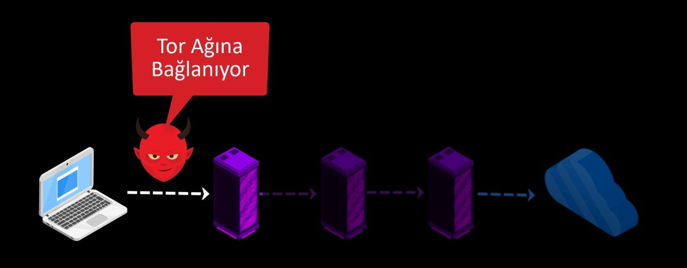Öte yandan daha büyük bir zahmet ile hem sizin ilk düğüm ile bağlantınızı hem de son düğüm ile sunucu arasındaki bağlantıyı dinliyorlarsa, sizin paketi gönderim zamanınız ve sunucuya ulaşan paketin zamanı arasındaki korelasyona bakarak, sizin bu sunucu ile etkileşime geçtiğiniz kanısına varıp takibi derinleştirebilirler.
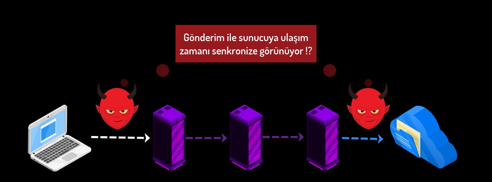 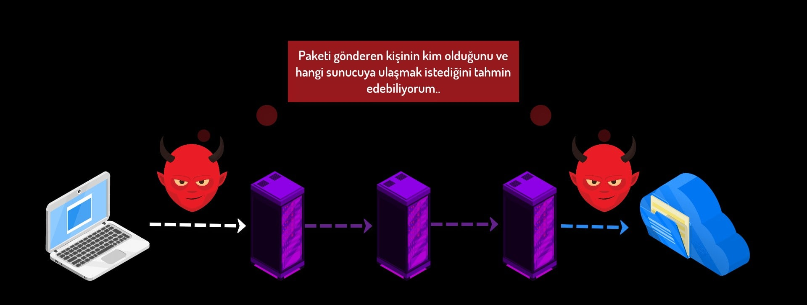Bunlar her ne kadar ikinci dereceden kanıtlar gibi dursa da gerektiğinde sizi şüpheli konumuna düşürebilecek durumlardır. Ve gerçek bir gizlilikten söz ettiğimizde bu açıklık kabul edilemez bir zaaftır.
Bu noktada Tor'a ek olarak "VPN" kullanımı ve "SSL" sertifikası bulunan "HTTPS" adreslerini tercih etmek bir zorunluluktur. Bu konuları eğitim içerisinde tek tek ele alacağız ancak şimdilik kısaca bilgi sahibi olmak adına açıklamaya çalışalım.
Eğer Tor ağına erişmeden önce VPN kullanırsak gözlemciler sadece VPN bağlantımızı görüp Tor ağına eriştiğimizi göremezler. Bu kullanıma VPN üzerinden Tor bağlantısı deniyor.
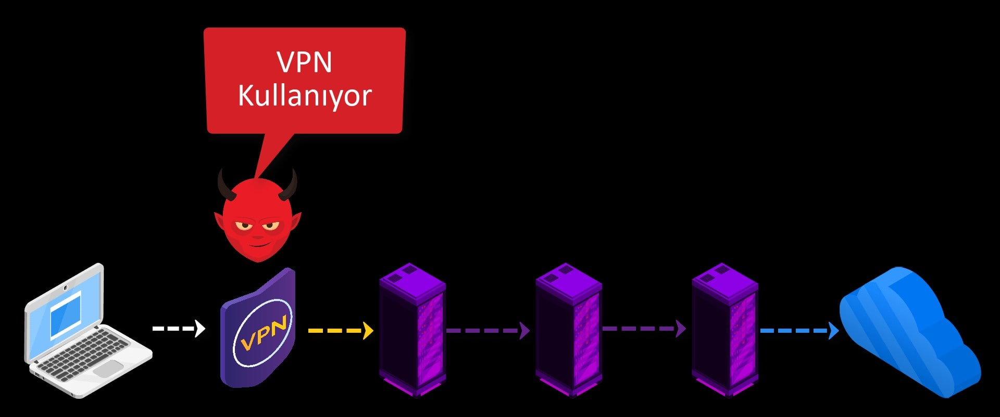Ayrıca yalnızca SSL sertifikası bulunan sunucular ile iletişim kurmak, sunucu ile bizim aramızdaki iletişimi şifreleyeceği için hassas bilgileri gözlemcilerden uzak tutar.
Temel Zaaf - 3
Diğer bir kuşku oluşturacak nokta, düğüm olarak kullanılan ve paketlerimizi taşıyan sunucuların dünyanın her yerindeki gönüllüler tarafından sağlanıyor olmasıdır. Bu gönüllüler arasında çeşitli istihbarat kurumları ve Tor üzerinde izleme yapma niyetinde olan kişi veya çeşitli kurumların olması hiç de şaşırtıcı değil. Özellikle de tercih edilen sunucuların yüksek bant genişliğine sahip olması ve aktif çalışma süresinin uzun olması gerekliliği, herhangi bir gönüllünün karşılıksız olarak sağlamasının kolay olmadığı şartlardır. Üstelik kendi sunucuları üzerinden oluşan trafik dolayısı ile telif hakları ve çeşitli davalar ile ilgilenme ihtimali de böylesi bir zahmete katlanan insanların çıkarlarını pek çok kez sorgulatıyor.
Durum böyle olunca işiniz şansa kalıyor ve hangi düğüm noktasına güveneceğinizi bilemiyorsunuz. Ancak topluluk tarafından bu güvensizlik olasılığı oldukça düşük olarak kabul ediliyor. Tor ağı üzerinde 7000 kadar düğüm noktasının olduğu ve sunucu seçiminin rastgelelik üzerine yapıldığı üstelik aynı anda birçok kullanıcıya hizmet verdiği düşünüldüğünde, trafik analizinin nokta atışı olacak şekilde yapılması olasılıksal olarak düşük hatta imkansız olarak kabul ediliyor. Ancak bu oldukça masumane bir tavır. Zira bir istihbarat teşkilatı ya da sizi takip etme motivasyonu yüksek olan herhangi bir oluşumun elindeki kaynağın da sınırını ve potansiyelini bilmediğimiz için her zaman için bu tehlike mevcut görünüyor. Hatta bununla ilgili bizzat Tor ağı üzerinde yapılmış ve kısmi başarıya ulaşmış saldırı çalışmaları da bulunuyor. Bu yüzden Tor topluluğu daha fazla gönüllü ile sunucu sayısını arttırarak art niyetli gözlemcilerin sayısını olasılıksal olarak düşürmek gayretinde.
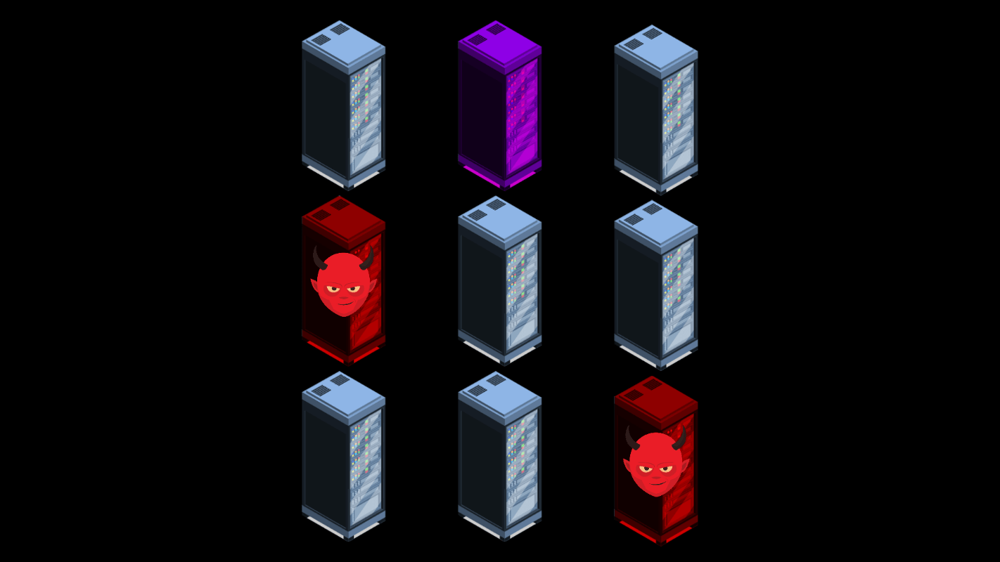Yine de; herhangi bir gözlemcinin elle tutulur bir kanıt için hem giriş hem de çıkış düğümlerini kontrol edebiliyor olması beklendiği için rastgele seçilen üç sunucudan ilk ve son düğüm noktasının aynı gözlemciye ait olma olasılığı oldukça düşüktür.
Üstelik Tor, ilk düğüm noktasını sabit tutarak 10 dakikada bir ortanca ve çıkış düğümlerini değiştirdiği için hem giriş hem de çıkış düğümünün aynı gözlemci tarafından yönetiliyor olma olasılığını istatistiksel olarak oldukça düşürmektedir.
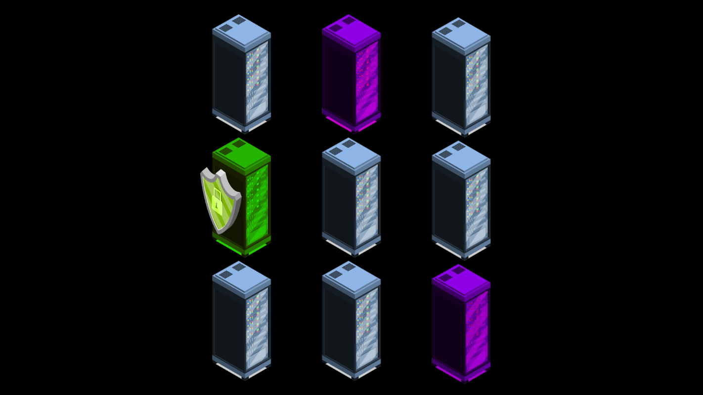Ayrıca Tor ağına yapılan saldırılar sonucu ortaya çıkan tabloda, Tor ağının kusurlu yapısına odaklanmaktan ziyade hedefteki kişilerin kendi gizliliklerini ele verecek dikkat hataları yapmalarını beklemenin daha kesin sonuç verdiği ortak uzman görüşüdür.
Kısacası anonimlik elde etmek hiç de kolay değil. Tor da hiç bir zaman %100 anonimliği garanti etmiyor. Ancak geçmişten günümüze baktığımızda, Tor üzerine yapılmış olan oldukça iyi finanse edilmiş sofistike saldırılar bile işe yarar kesin sonuçlar vermemiştir.
Hatta Edward Snowden'ın yayınladığı belgelerde "NSA" yani "Amerikan Ulusal Güvenlik Ajansı"'nın Tor ağını izleme konusunda "büyük" sorunlar yaşandığı da rapor edilmiştir. Yine de günümüz teşkilatlarının elindeki potansiyel kaynağı ve yeni geliştirilmiş olması muhtemel saldırı tekniklerini bilemeyeceğimiz için Tor hiç bir zaman %100 anonimliği garanti edemez. Bunun kanıtı olarak da yakın geçmişte Tor üzerinde bulunan 0day zafiyetleri gösterilebilir. Yayınlanmış ve kapatılmış pek çok zafiyet bulunsa da henüz kapatılmayan ve istihbarat servisleri gibi kuruluşların aktif olarak kullandığı tahmin edilen pek çok zaafiyet olduğu düşünülmektedir. Bu zaafiyetler genellikle gerçek ip adresinizin açığa çıkmasına neden olacak türden kritik açıklardır.
Yine de şu an için bildiğimiz kadarıyla teknik saldırılardan ziyade Tor ağının gizliliğini ele veren en yaygın 2 tür metot bulunuyor.
- Art niyetli çıkış düğümleri
- Zamanlama analizi
Art Niyetli Çıkış Düğümleri
Daha önce de bahsettiğimiz şekilde Tor ağının sunucuları gönüllülük üzerine kuruludur ve bu gönüllülerin gerçekte kimler olduğu ve hangi amaçla bu sunucu kaynağını sağladığını asla bilemiyoruz. Yapılan çeşitli araştırmalar neticesinde Tor ağının çıkış düğümlerinin yaklaşık %2.5'inin kötü niyetli kişiler tarafından sağlandığı tahmin ediliyor. Ancak yine de art niyetli sunucuların tespiti için düzenli aralıklarla testler yapılıp, zararlı olduğu tespit edilen sunucular Tor ağından çıkarılıyor olsa da bu yöntemin kesin bir çözüm sağlamadığı da bir gerçek.
Art niyetli çıkış düğümleri ne yapabilir ?
- Son düğüm olduğu için kim olduğunuzu doğrudan bilmiyor olsa da hangi sunucuya ulaşmak istediğinizi biliyor. Bununla birlikte, gerçek kimliğinizi doğrudan veya dolaylı olarak iletişiminiz veya internet davranışınız aracılığıyla açık etme riskiniz bulunuyor.
- Verilerinizi gözetlemenin yanı sıra, kötü amaçlı Tor çıkış düğümleri, genellikle sayfa isteğinizi sahte bir web sitesine yönlendiren ortadaki adam (MitM) saldırısı gerçekleştirebiliyor. 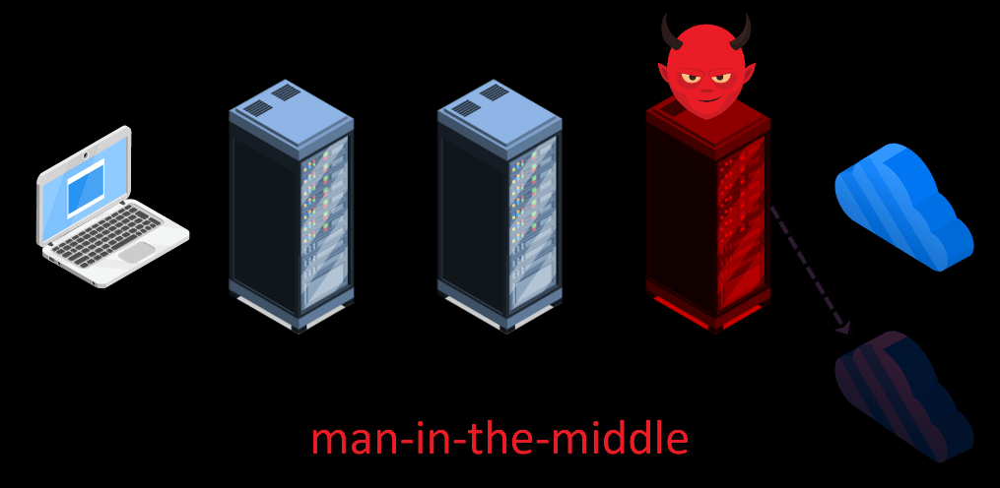
Nasıl korunabiliriz ?
- Güvenli SSL şifreli (https://) web sitelerine bağlandığınız sürece, verileriniz güvende kalır ve sahte bir çıkış düğümü tarafından riske edilemez.
- Ortadaki adam saldırılarının bilincinde olarak gitmek istediğiniz adresi kontrol etmek ve girdiğiniz bilgilerin hassasiyetinin farkında olmak güvenliğiniz için önemlidir. Yani Tor ağını kullandığınız için güvendeyim rehavetine kapılmadan, sürekli tüm adımlarınızı da kontrol altında tutmalısınız.
Zamanlama Saldırıları
Esasen zamanlama saldırıları çok çeşitli senaryolar ile oluşturulabilecek , güvenliği en fazla riske eden saldırılardır. Zamanlama saldırılarında temel amaç; gerçekleştirilen faaliyet ile kişinin Tor ağına eriştiği zaman arasındaki korelasyonu belirlemektir.
Örneğin 2013 yılında Harvard üniversitesinde sınavı ertelemek için bir bomba ihbarı yapılmıştı. Bu ihbar Tor ağı üzerinden belirli bir süre sonra kendi kendini imha eden bir e-posta hizmeti kullanılarak gerçekleştirilmişti. Ancak tüm bu güvenlik önlemlerine rağmen ihbarı yapan kişi yakalandı. Yakalanmasının temel nedeni gönderiyi kampüsün wifi ağı üzerinden gerçekleştirmesiydi. Araştırma ekibi mesajın gönderildiği zaman aralığındaki internet trafiğini analiz ederek Tor ağının kullanıldığı süreçteki internet kullanım kayıtlarına baktı. Neticede Tor ağını kampüs içerisinde kullanan tek bir kişi vardı ve bu şekilde mesajı gönderenin de o kişi olduğu ortaya çıktı. Bu oldukça basit bir dikkatsizlik hatası ancak temelde bu gibi zaman eşleştirmeleri sayesinde kişilerin gerçek kimlikleri ortaya çıkabiliyor.
Bunun haricinde eğer gözlemcinin elinde Tor ağı üzerinde yer alan yüksek sayıda sunucu varsa gelen ve giden verilerin analizini yaparak da bu duruma benzer şekilde kişilerin kimliğini tespit edebilir. Buna rağmen, herhangi bir anda çevrimiçi olan çok sayıda Tor kullanıcısı olacağı için, böyle bir korelasyon kapsamlı ve uzun süreli istatistiksel analiz gerektireceğinden kesin sonuç alınması neredeyse imkansız olarak görülüyor. Bununla birlikte, NSA, Mossad ve hatta neredeyse sınırsız güce ve gerçekten küresel bir erişime sahip olan çeşitli organizasyonların ellerinde olan potansiyel kaynağı bilmemize olanak yok elbette. Yani teoride, gözlemcinin hedef için yeterince kaynak ayırması durumunda hedefin gizliliğini ihlal edebilme ihtimali her zaman için bulunuyor.
Ayrıca bu iki saldırı dışında kişinin yapabileceği pek çok dikkat hatası da kişinin kimliğini doğrudan ele verebilir. Yine de dikkat hatası dışındaki teknik saldırılar ilginizi çekiyorsa aşağıdaki listeden Tor ağına yapıldığı bilinen saldırılara da göz atabilirsiniz.
Geçmişten günümüze saldırı türleri.
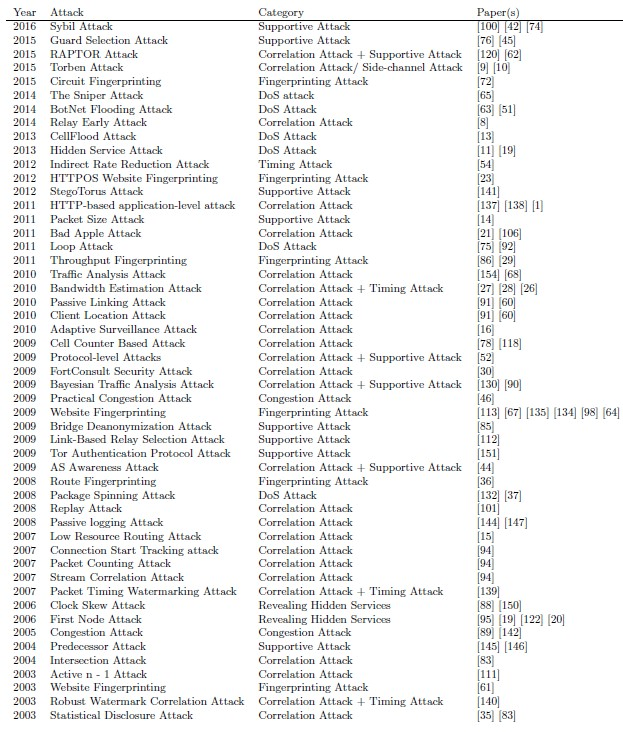Kaynak: Attacks on Tor
Eğer Tor projesine aktif katkı sağlamak için geliştirici olarak katılmayacaksanız, teknik saldırıların detayları normal bir kullanıcı için gereksizdir. Neticede teknik saldırıların çözümü Tor geliştiricilerinin sorumluluğundadır. Yine de genel bilgi sahibi olmak adına listede yer alan saldırıları araştırmanız size hiç bir şey kaybettirmez.
Nasıl korunabiliriz ?
Zamanlama saldırılarından korunmanın doğrudan bir yolu olmasa da, kişisel aktivitelerinizi kontrol altında tutarak hareket etmeniz güvenlik sağlayabilir. Bağlı bulunduğunuz internet, bulunduğunuz konum, kullandığınız bilgisayar ve gerçek hayatta sizinle ilişkilendirilebilecek ne varsa tüm bu parametreleri dikkate alarak hareket etmeniz gerekir. Kısacası "OPSEC" denilen operasyon güvenliği için gereken tüm faktörleri her daim kontrolünüz altında tutabilmeniz gerekir.
Tor Gizli Servisleri
Tor gizli servislerini açıklamaya, birkaç kavramı ele alarak başlayalım. Bu kavramlar daha önce de sıklıkla duymuş olmanızın muhtemel olduğu; "Deep Web" "Dark Web" ve "Surface Web" kavramlarıdır. Buz dağı örneği, kavramları iyi bir biçimde temsil ettiği için sıklıkla kullanılır.
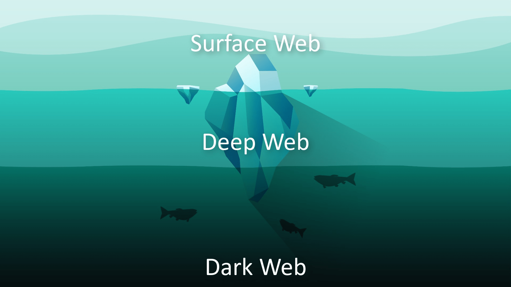Surface Web
Buz dağı benzetmesinde yer aldığı şekilde, web ağının yüzeyini yani arama motorları tarafından indexlenen genel web ağının çok küçük bir kısmını temsil eder. Örneğin Google gibi bir arama motorunu kullanarak arama yaptığınızda karşınıza çıkan tüm web içerikleri yalnızca surface web alanındakileri temsil ediyor. Bu web alanındaki siteler arama motorları tarafından indexlenmeyi kabul eden sitelerdir. Ve tüm web ağı düşünüldüğünde ağın çok küçük bir kısmını temsil ederler.
Deep Web
Surface web den farklı olarak, arama motorlarının indexlemediği her türlü web içeriğini temsil eder. Genellikle arama motorlarının indexlemeye değer bulmadığı ya da doğrudan web sitelerinin arama motorlarından kaçmak için indexlenmeyi engellediği web alanının genelini temsil eder. Bu alandaki web sitelerine erişmek için doğrudan web adresinin girilmesi gerekir. Ve bağlantı için gereken şartların sağlanması gerekir.
Örneğin sitelerin admin panelleri güvenlik nedeniyle genellikle arama motorlarının indexlemesi dışında tutulurlar. Böylelikle sitenin admin panelini arama motoru üzerinden bulunamazken, eğer tam adresini biliyorsak bu admin paneline erişebiliriz. İşte bu ve bunun gibi pek çok nedenle arama motorlarının kapsamı dışında tutulan yani diğer bir deyişle, derinde kalan web alanına "derin web" ifadesinin İngilizce karşılığı olan "deep web" deniyor.
Dark Web
Dark web ise yine deep webe benzer şekilde surface webteki arama motorlarının kapsamı dışındadır ve Tor ağı üzerinde yer aldığı için yalnızca Tor üzerinden erişilebilir durumdadır.
Dark web Tor ağı üzerinde tutulan, gizliliğin ön planda olduğu .onion uzantılı web adreslerinin genel adıdır. Bu .onion uzantılı adresler herkes tarafından ücretsiz şekilde oluşturulabilir ve anonim şekilde yayınlanabilir. Anonim ve ücretsiz olarak oluşturulabiliyor olması bu web ağının suistimale daha açık olup, daha çok karanlık işler için kullanılmasının önünü açmıştır. Bu web ağı yüksek oranda art niyetli amaçlar uğruna kullanıldığından "Dark Web" yani "Karanlık Web" olarak isimlendirilmiştir. Tor ağı üzerinden erişilebildiği için bu tür web sitelerine "Tor gizli servisleri" ya da daha modern adıyla "onion servisleri" de denmektedir.
Kısaca onion servislerinden bahsetmemiz gerekirse;
Onion servisi üzerinden yayın yapmak için herhangi bir üçüncü taraf hizmet sağlayıcıya "alan adı" ya da "dosyalarının barındırılması" için ihtiyaç duymadan, kendi web sitemizi Tor ağı üzerinden yayınlayabiliyoruz. Üstelik tüm bağlantı Tor ağı üzerinden yönlendirildiği ve şifrelendiği için .onion uzantısı üzerinden yayın yaparken anonim kalabiliyoruz. Kısaca onion servislerinin çalışma yapısı bu şekilde. Bu servislerden eğitim devamında ayrıca bir bölümde tekrar bahsediyor olacağız.
Şu ana kadar yapmış olduğumuz açıklamalar ile genel olarak bilmemiz gereken pek çok kavramdan kısaca söz etmiş olduk. Ayrıca yeri geldikçe tekrar bu konulardan daha detaylıca eğitim içerisinde bahsediyor olacağız.
Şimdi Tor ağına erişebileceğimiz çeşitli araç ve yöntemleri ele alarak anlatımlara devam edelim.
Tor Ağına Erişmek
Tor ağını kullanmak için birden fazla yöntem bulunmakla birlikte biz bu kurs içerisinde en güvenli olarak kabul edilen birkaç yöntemi ele alarak anlatımları bu yöntemler üzerinden gerçekleştireceğiz.
Tor ağına güvenli şekilde erişmek için 3 farklı yolu ele alacağız, bunlar;
| Yöntemler | Güvenlik Derecesi |
|---|---|
| Tor Browser | Basit ancak pek güvenli bir yöntem sayılmaz. |
| Tail OS | Pek çok durumda iyi bir yöntemdir. |
| Qubes OS üzerinden Whonix | En güvenli olarak kabul edilen yöntemdir. |
Yöntemleri açıklarken yeri geldikçe yöntemlerin avantajlarından ve dezavantajlarından da ayrıca bahsediyor olacağız. Böylelikle ihtiyacınız olduğunda hangi yöntemin sizin ihtiyacınızı daha doğru şekilde karşılayacağını da biliyor olacaksınız.
Tor Ağını Kullanmak Yasal Mıdır ?
Ayrıca son olarak Tor ağını kullanmanın yasal olup olmadığı konusuna da açıklık getirelim.
Aslında yasal olup olmaması tamamen Tor ağını hangi amaç için kullandığınıza göre değişiklik gösterir. Yani yalnızca Tor ağına bağlandığınız için pek çok durumda suçlanmazsınız. Yalnızca Tor ağına bağlanmış olmak doğrudan suç teşkil etmez. Fakat ağ üzerinde yaptığınız tüm faaliyetlerin sorumluluğu size aittir. Suç teşkil eden faaliyetleriniz varsa ve yakalanırsanız suçlanmanız gayet doğaldır. Özetle suç unsuru bulunmayan hiç bir faaliyet Tor ağı üzerinden gerçekleştirildiği için yasal anlamda sorun teşkil etmeyecektir.
Bir sonraki kısımda ilk kullanım yöntemimiz olan Tor Browser aracını ele alarak anlatımlara devam ediyor olacağız.